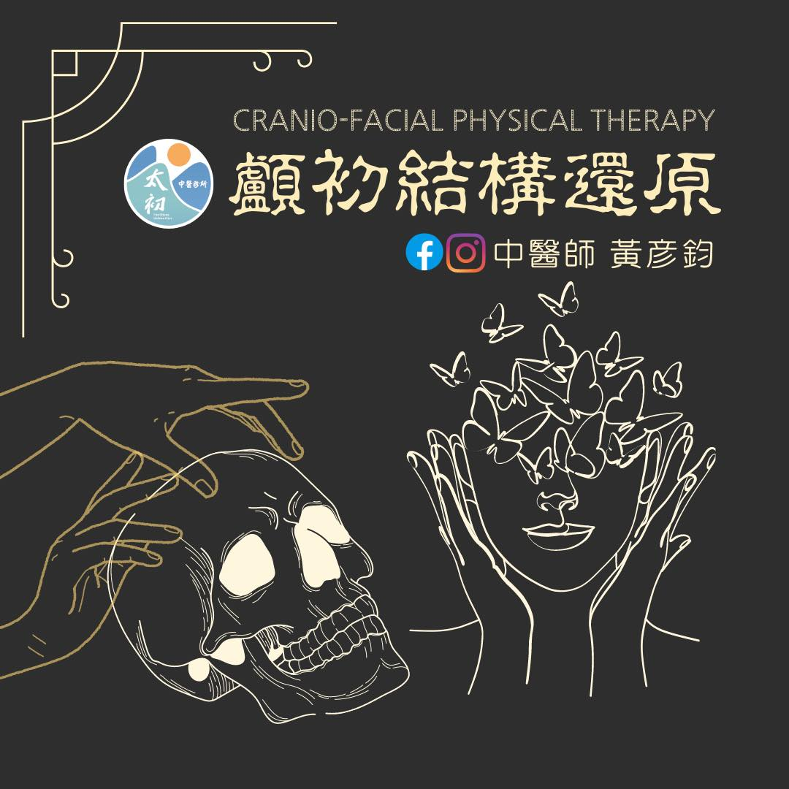
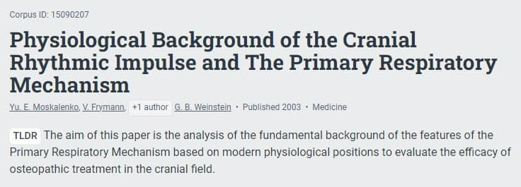

#顱初結構還原💆🏼♂️💆💆♀️
#顱初結構還原💆🏼♂️💆💆♀️
🙋🏻♀️：「醫師，頭顱骨可以"整"唷?! 頭顱的骨頭會動嗎？」
我們的頭顱骨有8塊，顏面骨有14塊，總共22塊大小不等的骨頭組成我們的頭顱與顏面。
這些骨頭相接的地方我們稱為「顱縫」，在肌肉骨骼系統的關節歸類屬於"不可動關節"，但其實每塊顱骨之間是會相互移動的！
許多臨床骨病學研究學家也早就證實顱骨間的活動與腦脊髓液的流動及呼吸有很大的連動關係，只不過這些微小、精細的活動，需要透過專門的訓練才能經由觸診的手下感覺來感知，並且運用來"調整"顱骨，死推硬擠是完全沒有作用的，反倒還會造成不必要的傷害。
🙋🏻♀️：「那為什麼顱骨會跑掉呢？」
生活中的各種不良姿態、特定使用型態與不正確的活動模式，容易造成肌群間筋膜的拉扯導致張力不均，頭顱區的筋膜張力也會受累積的張力影響，限制了應有的活動模式，也默默地對顱骨產生不對等的拉扯，日復一日顱面的型態就會漸漸改變，顱縫活動受限、顱骨系統失衡後也就進一步產生各式各樣的毛病，像是慢性頭痛、單側鼻塞、顳顎關節障礙、大小臉、下巴歪斜等問題。
💁♂️：「那要怎麼辦呢？」
顱縫卡在哪裡是可以透過觸診來評估的，這些顱骨系統失衡所衍生的問題都能夠藉由精細輕巧的徒手治療技術來獲得改善，逐步治療以還原顱骨系統的原貌。有類似問題的朋友都歡迎進一步專人諮詢唷！
📖參考文獻
1. Moskalenko, Y., Frymann, V., Kravchenko, T., & Weinstein, G. (2003). Physiological background of the Cranial Rhythmic Impulse and the Primary respiratory Mechanism. AAO Journal
2. Goldman, B., Goldman, B., Bach, B., Huber, J. and Armitage, H., 2018. The Beating Brain: A Video Captures The Organ's Rhythmic Pulsations - Scope.
顱初結構還原-專人諮詢⬇️
https://lin.ee/jrVoSeM
關於太初⬇️
https://reurl.cc/RWROV6
太初中醫診所
中醫師 黃彥鈞
中醫師 薛博文
中醫安心講堂 褚衍強中醫師
中醫師 鄒知秀 Dr.Emma

